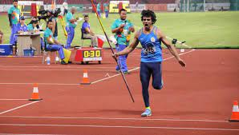
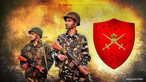

CATEGORIES OF SCHOLARSHIPS
- SPORTS
- MERIT BASED
- BACKWARD CLASSES
- STUDENT ENTREPRENEURSHIP PROGRAMMES
- MILITARY SCHOLARSHIPS
 The Government of India offers sports scholarships to exceptional athletes, fostering excellence in various disciplines. These scholarships provide financial support, specialized training, and educational opportunities, empowering athletes to pursue both their sporting ambitions and academic growth, contributing to the nation's sporting prowess on the global stage.
The Government of India bestows merit-based scholarships to recognize and nurture academic brilliance. These scholarships celebrate outstanding students, providing financial assistance and encouragement to pursue higher education. By promoting intellectual excellence, these initiatives contribute to India's future leadership and innovation across diverse fields.
 The Government of India extends backward classes scholarships to uplift marginalized communities by enabling access to education. These scholarships offer financial aid and support to students from disadvantaged backgrounds, fostering inclusivity and bridging educational gaps. This initiative empowers individuals to overcome socio-economic barriers and contribute to national progress.
The Government of India extends backward classes scholarships to uplift marginalized communities by enabling access to education. These scholarships offer financial aid and support to students from disadvantaged backgrounds, fostering inclusivity and bridging educational gaps. This initiative empowers individuals to overcome socio-economic barriers and contribute to national progress.
The Government of India champions student entrepreneurship through specialized scholarships. These programs encourage innovative thinking, offering financial aid, mentorship, and resources to aspiring student entrepreneurs. By fostering a culture of innovation and enterprise, these scholarships drive economic growth and job creation, shaping a dynamic future for India.
 The Government of India proudly offers military scholarships, honoring the dedication of those who serve. These scholarships provide educational opportunities, financial support, and training for personnel and their families, ensuring holistic growth and enhancing the nation's defense capabilities.